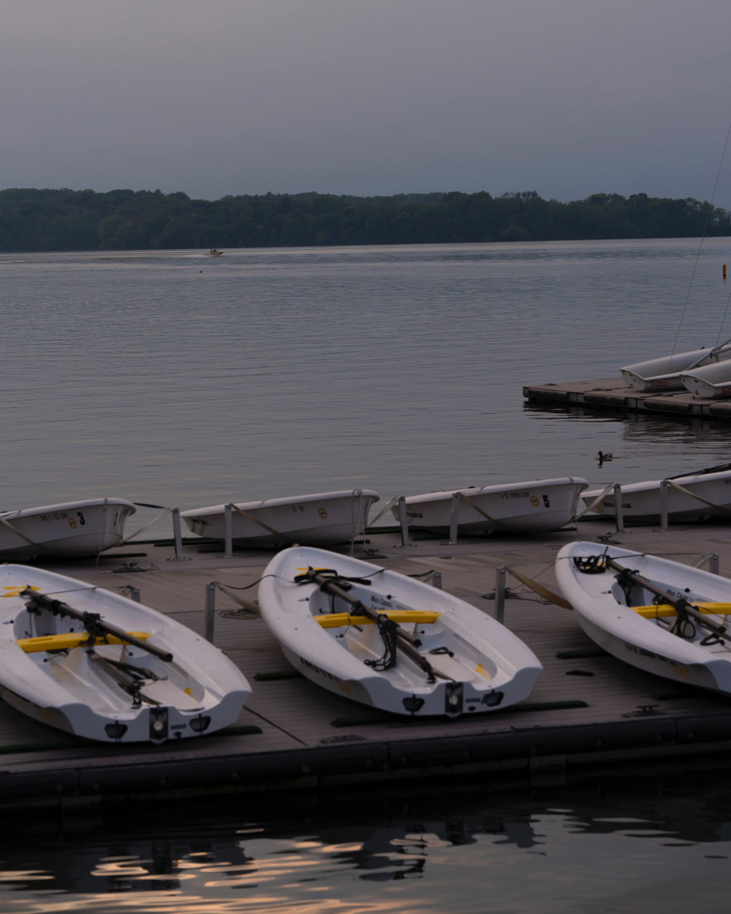

Photographs

Sunset over Lake Michigan, with a flock of geese taking off from the water. It's a chilly October in Chicago, and I captured this scene while walking along the lake with my friend.

I visited Egypt in midsummer, where the intense sun shone over the desert and the pyramids, and camels slowly walked through the desert. This scene seemed to transport me back thousands of years.

Some kayak docked at a lake, I snapped this photo at UW-Madison, where the campus is very different from ours here in that they have a lake, and the students can paddle on it or do other water sports.